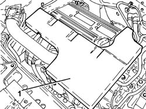
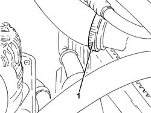
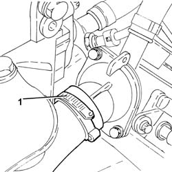
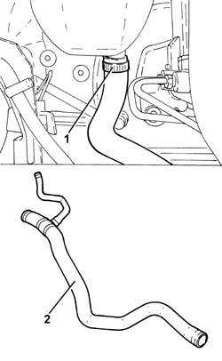
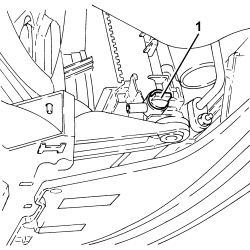
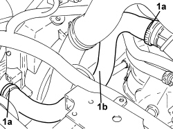
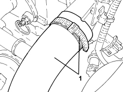
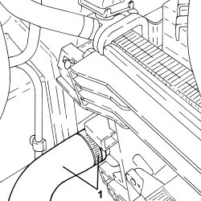

1088D14 UPPER RADIATOR COOLANT OUTLET HOSE - R.R.
- Path
- Procedures > 10 ENGINE > 1088 ENGINE COOLING > 1088D COOLANT PIPES AND HOSES > 1088D14 UPPER RADIATOR COOLANT OUTLET HOSE - R.R.
- Kind
- repair procedure (removal / refitting; the operation number is the code)
- Applies to
- all engines; all production periods
- Interactive page
- https://sloeber94.github.io/elrnDB-fCrm/en/#/194000406
Applies to: engines: 2.2; all production periods
 Removing
Removing
 Refitting
Refitting- Position the vehicle on a lift.
- Make sure that the ignition key is in the OFF position, then disconnect the battery terminal (-).
Description | Connector | |
|---|---|---|
- | Battery |
1. Remove the soundproof cover secured to the engine by three pins.

Applies to: engines: 2.2; all production periods
Op. 7055B54 UNDER ENGINE PROTECTION/GUARD - R.R.
1. Unscrew the coolant drain plug from the radiator.
Applies to: engines: 2.2; all production periods
1. Working from beneath the car, loosen the band and disconnect the radiator upper coolant inlet hose, radiator side.

Applies to: engines: 2.2; all production periods
1. Loosen the collar and disconnect the upper coolant input sleeve to the radiator, thermostat side.

Applies to: engines: 2.2; all production periods
1. Loosen the band and disconnect the upper radiator coolant inlet hose, tank feed side.
2. Remove the radiator upper coolant inlet hose assembly.

Applies to: engines: 2.2; all production periods
Refitting
Removing- Refit the radiator upper coolant inlet hose assembly.
- Connect the upper radiator coolant inlet hose, tank feed side and tighten the band.
- Connect the radiator upper coolant inlet hose, thermostat side, and tighten the band.
- Connect the upper coolant inlet hose to the radiator, radiator side, and tighten the band.
- Tighten the coolant drain plug to the radiator.
Op. 7055B54 UNDER ENGINE PROTECTION/GUARD - R.R.
- Refit the soundproofing cover in its seat and secure to the engine with the three pins.
- Connect the negative battery terminal.
Op. 0010T20 ENGINE COOLANT - CHANGE
- Remove the vehicle from the lift.
Applies to: engines: 1.9 JTD 8v, 1.9 JTD 16v, 2.4 JTD 20v; all production periods
Removing
RefittingOp. 5530B52 BATTERY SUPPORT/DRIP TRAY - R.R
Op. 7055B54 UNDER ENGINE PROTECTION/GUARD - R.R.
1. Undo the radiator coolant drain plug.

Applies to: engines: 1.9 JTD 8v, 1.9 JTD 16v, 2.4 JTD 20v; all production periods
1. Loosen the bands (1a) and remove the radiator upper coolant inlet hose (1b).

Applies to: engines: 1.9 JTD 8v, 1.9 JTD 16v, 2.4 JTD 20v; all production periods
Refitting
Removing- Refit the lower coolant outlet hose from the radiator and secure it using the bands.
- Tighten the coolant drain plug to the radiator.
Op. 7055B54 UNDER ENGINE PROTECTION/GUARD - R.R.
Applies to: engines: 1.8; all production periods
Removing
RefittingOp. 0010T20 ENGINE COOLANT - CHANGE
1. Loosen the band and disconnect the radiator coolant inlet hose, thermostat side.

Applies to: engines: 1.8; all production periods
1. Loosen the band and disconnect the radiator coolant inlet hose, radiator side and remove it.

Applies to: engines: 1.8; all production periods
Refitting
Removing- Place the radiator coolant inlet hose in position, radiator side and tighten the band.
- Connect the radiator coolant inlet hose, thermostat side, and tighten the band.
Topics linked from this page (5)
- 0010T20 ENGINE COOLANT - CHANGE
- 5530B10 BATTERY - R+R
- 5530B52 BATTERY SUPPORT/DRIP TRAY - R.R
- 7055B54 UNDER ENGINE PROTECTION/GUARD - R.R.
- A001 BATTERY